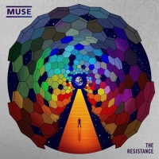

Muse is a British rock band started in 1992 by three high school friends in southern England. The band is still made up of the same three members today: guitarist/vocalist Matt Bellamy, bassist/backup vocalist Chris Wolstenholme, and drummer Dominic Howard. As any band, Muse started off small and remained small for its first five years, until the band's first EP, the Muse EP was released in 1997. Fame quickly followed and the band's first feature-length album, Showbiz was released in 1999 along with a host of single EPs. The band's second album, Origin of Symmetry was released in 2001 to critical acclaim across England. The band first made it big stateside with their 2003 fan-favorite third album, Absolution, and its hit songs Time is Running Out and Hysteria. The band's fourth album, 2006's Black Holes and Revelations brought the band even more fame worldwide, with one of the band's biggest hits ever, Knights of Cydonia coming from the album. 2009 brought Muse's first number one hit in America, The Resistance and won a Grammy on the strength of the megahit Uprising. Muse followed up The Resistance with The 2nd Law in 2012 and recently released the mega-hyped album Drones this past summer. Muse's sound has changed a lot over the years, but has always been characterized by heavy, prog-rock influenced instrumentals, electronic-influenced beats, and heavy bass and drums.

Solo from Knights of Cydonia on 2006's Black Holes and Revelations. Knights became a fan favorite and has been played at nearly every Muse concert since the song came out, usually closing out either a setlist or the entire concert. Its music video has also gained fame across the internet.
Chorus from Undisclosed Desires on 2009's The Resistance. Undisclosed Desires was one of Muse's first "pop-sounding" hits and is one of the band's most popular mainstream hits. Since then, Muse has expanded a bit more into "pop-ish" territory with hits such as Madness and Dead Inside on newer albums.
Chorus and bridge from Panic Station on 2012's The 2nd Law. Panic Station originally began as an experiment in slap bass by bassist Chris Wolstenholme, and then became one of the album's standout hits, almost immediately becoming a fan-favorite and then loved even more after the release of its goofy music video.
Second part of solo from Reapers on 2015's Drones. Perhaps one of Muse's most hardcore songs, Reapers was also one of the most highly anticipated songs from the album after some teaser play during a pre-release tour across Britain. Reapers has become a fan-favorite from the new album very quickly.